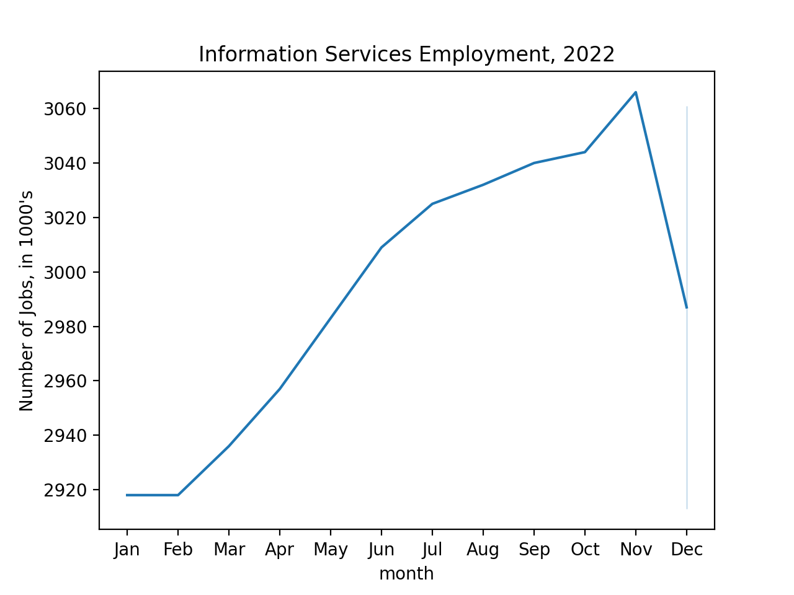
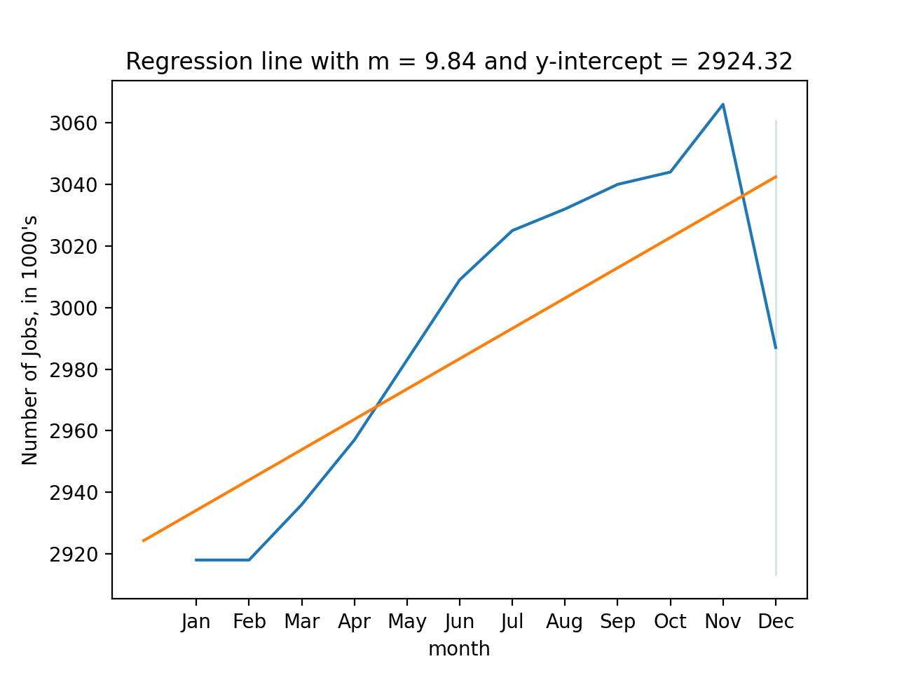
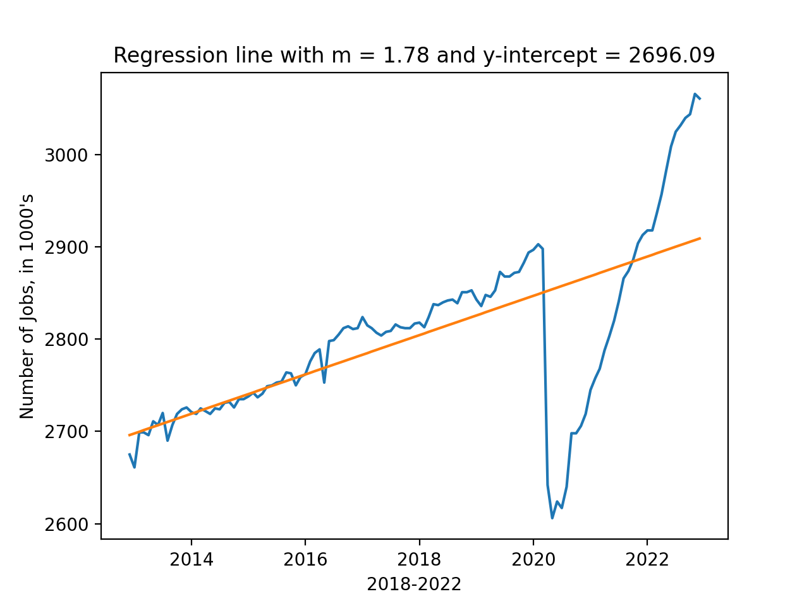
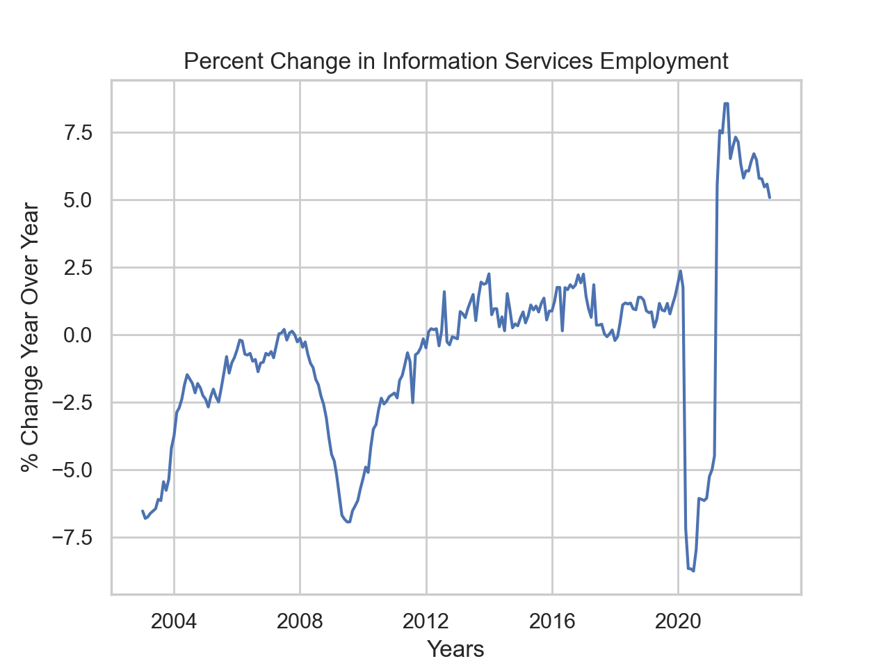

Program 5: Tech Jobs.
CSci 39542: Introduction to Data Science
Department of Computer Science
Hunter College, City University of New York
Spring 2023
Classwork Quizzes Homework Project
Program Description
Program 5: Tech Jobs. Due 10am, Wednesday, 1 March.
Learning Objective: to build intuition and strengthen competency with least squares method of minimizing functions.
Available Libraries: pandas, numpy, and core Python 3.6+.
Data Source: St. Louis Federal Reserve Bank Online Data (FRED),
U Michigan BLS Monthly Job Reports Rapid Insights, November 2022
Sample Datasets:
Hiring in the technical sector has been in the news recently. This program looks at the data related to information services in the United States and is inspired by Prof. Stevenson's recent analysis:

BLS Monthly Jobs Report: Rapid Insights from Betsey Stevenson
The graph above was generated in early December and includes data through November 2022. We will use data sets that include through the end of 2022 from the St. Louis Federal Reserve Economic Data (FRED). The assignment is broken into the following functions to allow for unit testing:
-
parse_datetime(df, column='DATE'): This function takes two inputs:-
df: a DataFrame containing the columncolumn. column: the name of a column.columnhas default value of'DATE'.
timestamp: contains thedatetimeobject corresponding to the string stored incolumn.month: return the number corresponding to the month oftimestamp: 1 for January, 2 for February, ... 12 for December.year: return the number corresponding to year oftimestamp.
parse_datetimefrom the DS 100: Section 9.4 or Program 4. -
-
compute_lin_reg(xes, yes): This function takes two inputs:xes: an iterables of numeric values representing the independent variableyes: an iterables of numeric values representing the dependent variable
- Compute the standard deviation of the
xesandyes. Call thesesd_xandsd_y. - Compute the correlation,
r, of thexesandyes. - Compute the slope,
theta_1, astheta_1 = r*sd_y/sd_x. - Compute the y-intercept,
theta_0, astheta_0 = average(yes) - theta_1 * average(xes) - Return
theta_0andtheta_1.
-
predict(xes, theta_0, theta_1): This function takes three inputs:xes: an iterables of numeric values representing the independent variabletheta_0: the y-intercept of the linear regression modeltheta_1: the slope of the linear regression model
xes, under the linear regression model with y-intercepttheta_0and slopetheta_1. -
mse_loss(y_actual,y_estimate):: This function takes two inputs:-
y_actual: a Series containing numeric values. -
y_estimate: a Series containing numeric values.
y_actualandy_estimate(e.g. the mean of the squares of the differences).
Note: this function was part of an earlier homework (Program 3) as well as in the textbook. It is included here to be used as a default argument for the error computation function below. -
-
rmse_loss(y_actual,y_estimate):: This function takes two inputs:-
y_actual: a Series containing numeric values. -
y_estimate: a Series containing numeric values.
y_actualandy_estimate(e.g. the square root of the mean of the squares of the differences). -
-
compute_error(y_actual,y_estimate,loss_fnc=mse_loss): This function takes three inputs:-
y_actual: a Series containing numeric values. -
y_estimate: a Series containing numeric values. -
loss_fnc: function that takes two numeric series as input parameters and returns a numeric value. It has a default value of mse_loss.
loss_fncon the inputsy_actualandy_estimateis returned. -
compute_ytd(df): This function takes one input:-
df: a DataFrame containing columnsmonth,yearandUSINFO.
Serieswith the number of jobs since the beginning of the year for that entry. For example, for the January 2022 row, the number would be 0 since January is the beginning of the year. For July 2022, the number be the difference betweenUSINFOfor July andUSINFOfor January.-
compute_year_over_year(df): This function takes one input:-
df: a DataFrame containing columnsmonth,yearandUSINFO.
USINFO. You can assume that the DataFrame is ordered by date, with earlier dates coming first in the DataFrame.
Note: you may find the df.pct_change function useful for computing the change from the previous year.-
Let's start with the 2022 numbers:
df_1yr = pd.read_csv('program05/fred_info_2022_1yr.csv')
df_1yr = parse_datetime(df_1yr)
print(df_1yr) DATE USINFO timestamp month year
0 2021-12-01 2913 2021-12-01 12 2021
1 2022-01-01 2918 2022-01-01 1 2022
2 2022-02-01 2918 2022-02-01 2 2022
3 2022-03-01 2936 2022-03-01 3 2022
4 2022-04-01 2957 2022-04-01 4 2022
5 2022-05-01 2983 2022-05-01 5 2022
6 2022-06-01 3009 2022-06-01 6 2022
7 2022-07-01 3025 2022-07-01 7 2022
8 2022-08-01 3032 2022-08-01 8 2022
9 2022-09-01 3040 2022-09-01 9 2022
10 2022-10-01 3044 2022-10-01 10 2022
11 2022-11-01 3066 2022-11-01 11 2022
12 2022-12-01 3061 2022-12-01 12 2022DATE and timestamp are printed the same, but if we check the types, they are stored as strings and datetime, respectively:
print(f'df_1yr has elements of:\n {df_1yr.dtypes}')df_1yr has elements of:
DATE object
USINFO int64
timestamp datetime64[ns]
month int64
year int64 Exploring the 2022 job numbers:
import seaborn as sns
import matplotlib.pyplot as plt
sns.lineplot(data = df_1yr, x = 'month', y='USINFO')
plt.ylabel('Number of Jobs')
plt.xticks(range(1,13),\
['Jan','Feb','Mar','Apr','May','Jun','Jul','Aug','Sep','Oct','Nov','Dec'])
plt.title('Information Services Employment, 2022')
plt.show()

Let's fit a regression line to the 2022 numbers:
theta_0, theta_1 = compute_lin_reg(df_1yr['month'],df_1yr['USINFO'])
xes = np.array([0,12])
yes = theta_1*xes + theta_0
sns.lineplot(data = df_1yr, x = 'month', y='USINFO')
plt.ylabel("Number of Jobs, in 1000's")
plt.xticks(range(1,13),\
['Jan','Feb','Mar','Apr','May','Jun','Jul','Aug','Sep','Oct','Nov','Dec'])
plt.plot(xes,yes)
plt.title(f'Regression line with m = {theta_1:.2f} and y-intercept = {theta_0:.2f}')
plt.show() 
We can also use the theta values to estimate future values. For example, since if we were to extend our count of months into 2023, we can compute the predicted number of jobs:
months_2023 = np.array([13,14,15,16,17])
print(predict(months_2023,theta_0,theta_1)*1000)[3052279.02790279 3062122.41224122 3071965.79657966 3081809.18091809
3091652.56525653]We can repeat our calculations using data from the last 5 years, but since we have more than 1 year, we can't use the month as our x-axis. Instead, we can use the index:
df_5yr = pd.read_csv('program05/fred_info_2022_5yr.csv')
df_5yr = parse_datetime(df_5yr)
print(df_5yr[:30])
print(df_5yr.index.to_series()) DATE USINFO timestamp month year
0 2012-12-01 2675 2012-12-01 12 2012
1 2013-01-01 2661 2013-01-01 1 2013
2 2013-02-01 2699 2013-02-01 2 2013
3 2013-03-01 2699 2013-03-01 3 2013
4 2013-04-01 2696 2013-04-01 4 2013
5 2013-05-01 2711 2013-05-01 5 2013
6 2013-06-01 2707 2013-06-01 6 2013
7 2013-07-01 2720 2013-07-01 7 2013
8 2013-08-01 2690 2013-08-01 8 2013
9 2013-09-01 2707 2013-09-01 9 2013
10 2013-10-01 2719 2013-10-01 10 2013
11 2013-11-01 2724 2013-11-01 11 2013
12 2013-12-01 2726 2013-12-01 12 2013
13 2014-01-01 2721 2014-01-01 1 2014
14 2014-02-01 2719 2014-02-01 2 2014
15 2014-03-01 2725 2014-03-01 3 2014
16 2014-04-01 2722 2014-04-01 4 2014
17 2014-05-01 2719 2014-05-01 5 2014
18 2014-06-01 2725 2014-06-01 6 2014
19 2014-07-01 2724 2014-07-01 7 2014
20 2014-08-01 2731 2014-08-01 8 2014
21 2014-09-01 2732 2014-09-01 9 2014
22 2014-10-01 2726 2014-10-01 10 2014
23 2014-11-01 2735 2014-11-01 11 2014
24 2014-12-01 2735 2014-12-01 12 2014
25 2015-01-01 2738 2015-01-01 1 2015
26 2015-02-01 2742 2015-02-01 2 2015
27 2015-03-01 2737 2015-03-01 3 2015
28 2015-04-01 2741 2015-04-01 4 2015
29 2015-05-01 2749 2015-05-01 5 2015
0 0
1 1
2 2
3 3
4 4
...
116 116
117 117
118 118
119 119
120 120
Length: 121, dtype: int64theta_0, theta_1 = compute_lin_reg(df_5yr.index.to_series(),df_5yr['USINFO'])
print(theta_0, theta_1)
df_5yr['predicted'] = theta_1*df_5yr.index.to_series() + theta_0
sns.lineplot(data = df_5yr, x = 'timestamp', y='USINFO')
sns.lineplot(data = df_5yr, x = 'timestamp', y='predicted')
plt.ylabel("Number of Jobs, in 1000's")
plt.xlabel("2018-2022")
plt.title(f'Regression line with m = {theta_1:.2f} and y-intercept = {theta_0:.2f}')
plt.show()
Using seaborn's functionality with time series data, we can look at year-to-date growth of jobs for the last ten years, highlighting 2022 in blue:
df_all = pd.read_csv('program05/fred_info_2022_all.csv')
df_all = parse_datetime(df_all)
print(df_all)
df_all['YTD'] = compute_ytd(df_all)
sns.lineplot(data=df_all[-120:], x = 'month', y='YTD', units='year',\
estimator=None, color=".7", linewidth=1)
sns.lineplot(data=df_all[-12:], x = 'month', y='YTD', linewidth=2)
plt.ylabel("Year To Date, in 1000's")
plt.xticks(range(1,13),\
['Jan','Feb','Mar','Apr','May','Jun','Jul','Aug','Sep','Oct','Nov','Dec'])
plt.title('Year To Date, 2013-2022')
plt.show()
Looking at the change, measured against previous year:
df_all['YTD'] = compute_ytd(df_all)
df_all['year_over_year'] = compute_year_over_year(df_all)
sns.set_theme(style="whitegrid")
sns.lineplot(data=df_all[-240:],x='timestamp',y='year_over_year')
plt.ylabel('% Change Year Over Year')
plt.xlabel('Years')
plt.title('Percent Change in Information Services Employment')
plt.show()

Notes and Hints:
- You should submit a .py file with only the standard comments at the top, the specified functions, and any helper functions you have written. The grading scripts will then import the file for testing. If your file includes code outside of functions, either comment the code out before submitting or use a main function that is conditionally executed (see Think CS: Section 6.8 for details).
- Include only the libraries you need (such as
pandas) for your functions and none of the ones for plotting (such asmatplotlib.pyplotandseaborn) since the functions submitted are computing and not plotting. Only the libraries listed in Available Libraries are loaded by the autograder. - See Lecture 3 or DS 100: Section 9.4 for working with dates and times.